Feel free to explore and discover the exciting data science projects I have done...so far.
Have fun, and if you find them interesting, please feel free to reach out to me!

Hey there! I'm thrilled to share an overview of my exciting data science projects
completed during my Data Science postgraduate journey.
Each project showcases my skills and insights in action. Explore the projects below, where you'll
find detailed documentation and access to the code on my GitHub account.
Let's embark on this data-driven journey together!
The student_grade.csv dataset is a fictitious dataset commonly used in educational data analysis and
machine learning tasks.
It represents a collection of student records and their corresponding grades in different subjects.
In this project, I utilized a diverse set of machine learning models, such as Extreme Gradient Boost (XGboost),
Decion Tree, Random Forest, Support Vector Machine (SVM), and
Generalized Linear Model (GLM), to predict student grades using the R programming language.
Each of these models has its unique strengths and characteristics, allowing me to explore their individual performance and compare their predictive abilities.
In addition to the machine learning models, I applied exploratory data analysis (EDA) techniques to gain insights into the dataset, identify patterns, detect outliers,
and understand the relationships between variables. By thoroughly exploring the data, I improved its quality, handled missing values, addressed outliers,
and made informed decisions during the modeling process.
To ensure reliable results, I employed 10-fold cross-validation, which involves dividing the data into ten subsets, training the models on nine subsets,
and evaluating their performance on the remaining subset. This technique helps assess the models' performance more robustly and mitigates the risk of overfitting.
To enhance the model's performance and reduce the dimensionality of the dataset, I employed feature extraction and selection techniques.
Boruta and Recursive Feature Elimination (RFE) methods were used to identify and select the most relevant features from the dataset.
By focusing on essential information and eliminating unnecessary or redundant features, I improved the efficiency and interpretability of the models.
Additionally, I utilized feature engineering techniques, which involved creating new features or transforming existing ones to better represent the underlying patterns in the data.
By deriving meaningful features, such as ratios, statistical measures, or interaction terms, I aimed to capture more informative signals for the models to learn from.
This process of feature engineering improved the models' ability to leverage the available data and enhance their predictive accuracy. To evaluate the performance of the models, I used various metrics, including accuracy, precision, specificity, recall, F1-Score, ROC_AUC, and Matthew's correlation coefficient.
These metrics provided a comprehensive understanding of the models' performance in terms of their overall accuracy, ability to classify correctly, sensitivity to different classes,
and their capability to handle imbalanced datasets. By analyzing these metrics, I could assess and compare the effectiveness of different models and
make informed decisions about their suitability for the given task.
This study represents an innovative endeavor to advance the field of depression detection by harnessing the power of deep learning (DL) algorithms.
The primary objective is to develop an objective and automated approach for accurately identifying and diagnosing depression using physiological signals.
By leveraging the advanced capabilities of DL algorithms, this research seeks to revolutionize the current diagnostic process and provide valuable insights to medical professionals.
One of the key advantages of DL algorithms is their ability to automatically extract and select relevant features from physiological signals.
This eliminates the need for manual feature engineering, which can be time-consuming and subjective. By leveraging these automated feature extraction techniques,
the study aims to uncover subtle patterns and markers in the physiological signals that are indicative of depression.
This has the potential to improve the accuracy and reliability of depression diagnosis.
Project pipepline
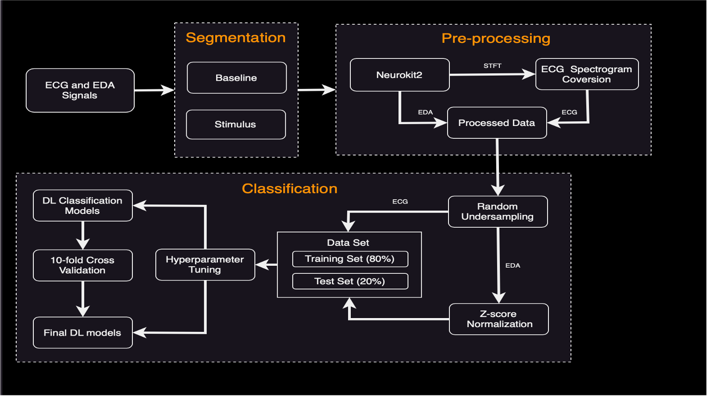
Pre-processed physiological gignals using Neurokit2
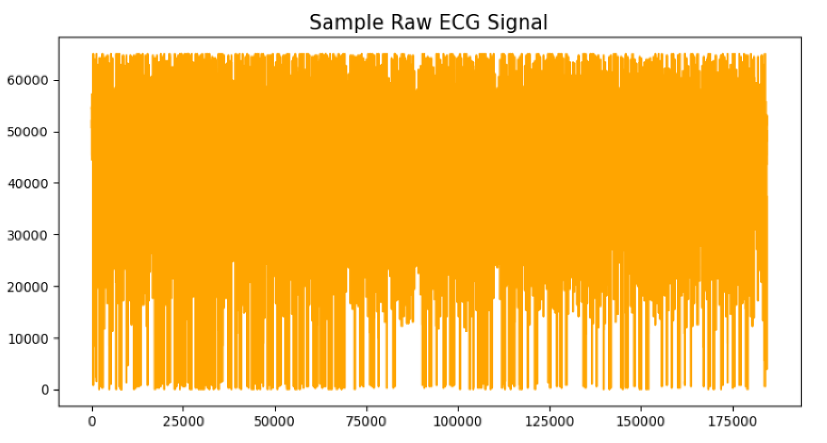
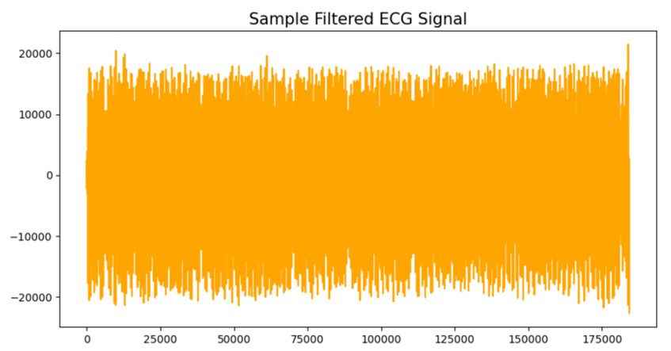
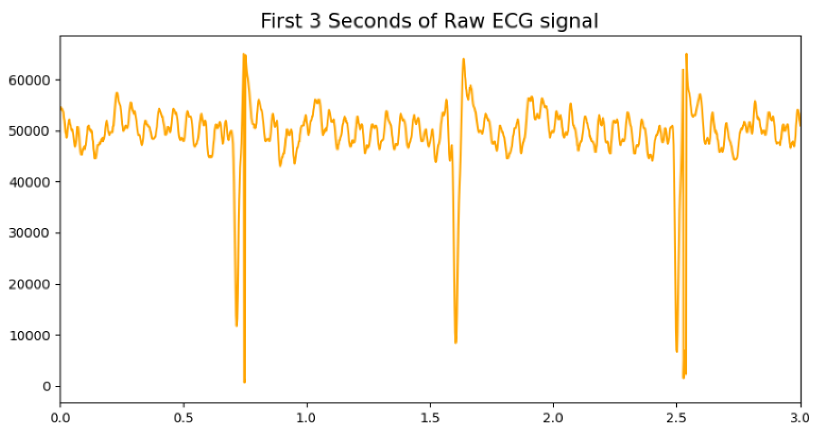
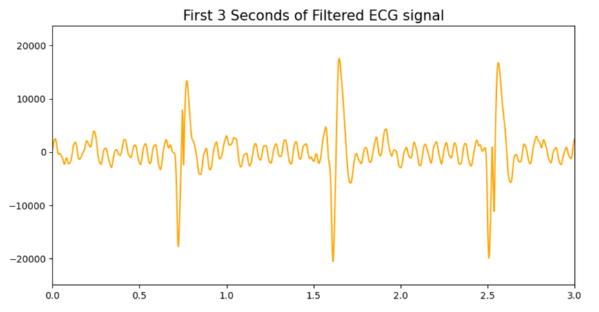
Converting ECG signal to spectrogram (STFT) to grayscale (from 1D to 2D images)
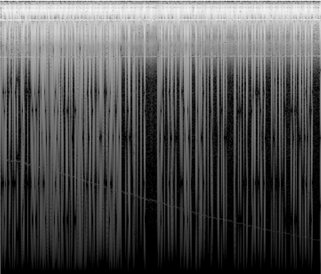
The findings of this research hold significant potential to transform the field of mental health care.
By developing an objective and automated depression detection system, the study aims to enhance the speed and efficiency of diagnosis.
This can greatly benefit both patients and medical professionals by reducing the time required for assessment and providing more accurate results.
Furthermore, the study's insights can contribute to the existing knowledge base in the field of depression detection.
By analyzing large volumes of physiological data using DL algorithms, the research aims to uncover new patterns and correlations that may have been previously overlooked.
These findings can enhance our understanding of depression and its underlying physiological mechanisms, potentially leading to the development of
more targeted and effective treatment approaches.
Deep learning algorithms' evaluation
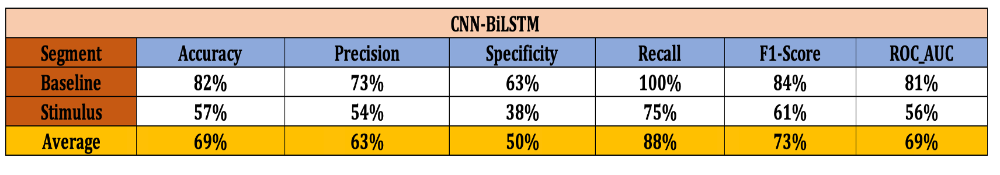
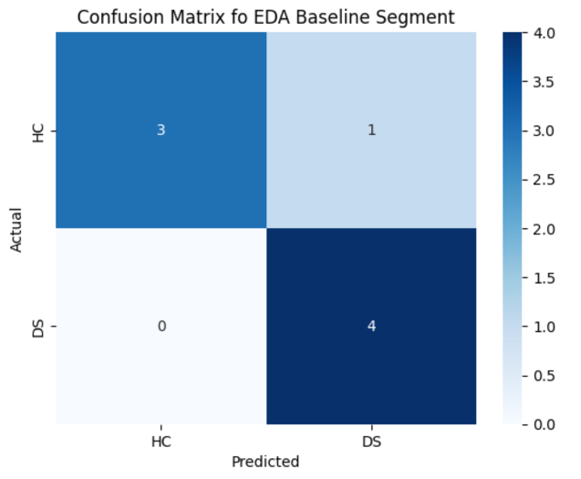
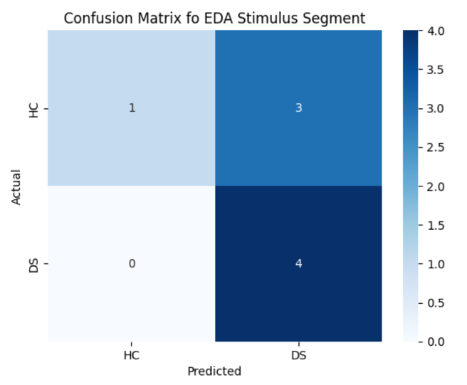
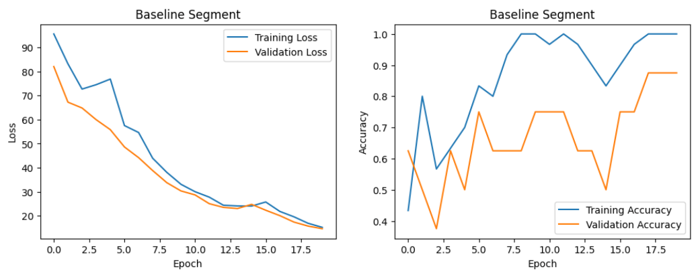
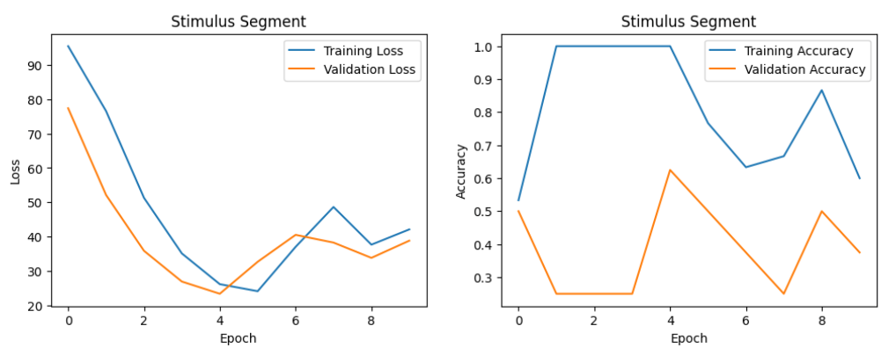
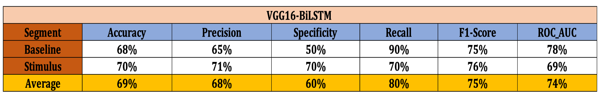
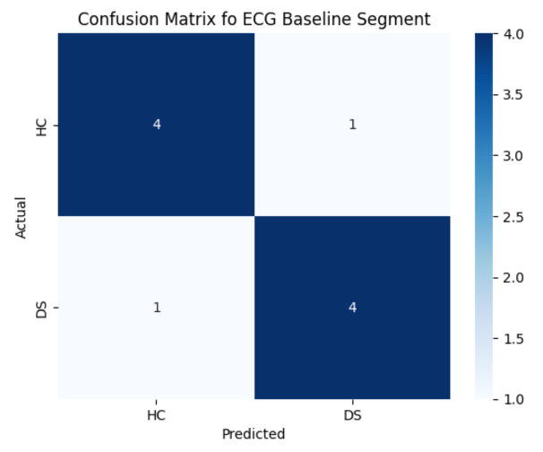
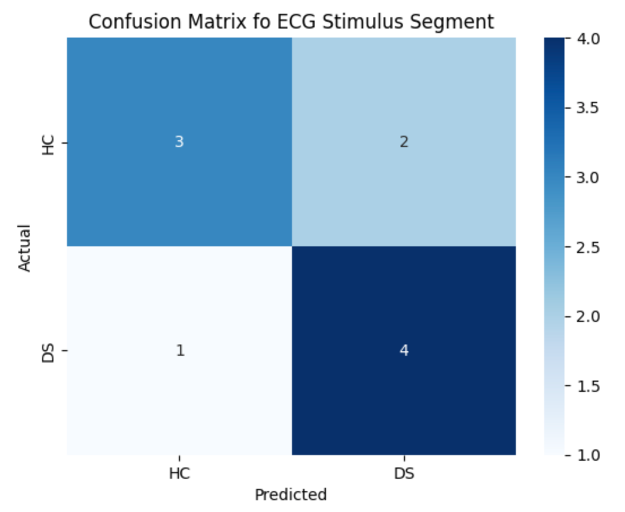
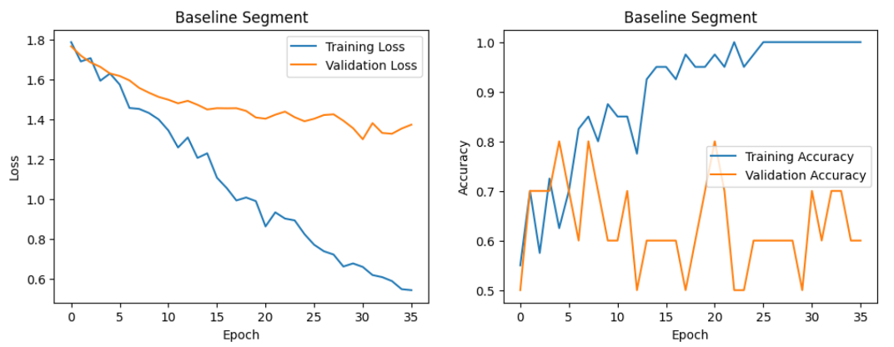
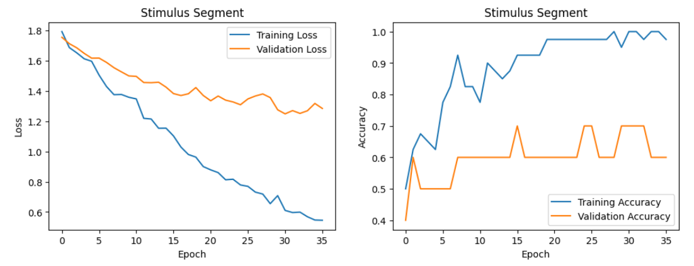
Thus, this study represents a significant step forward in the domain of depression detection.
By leveraging the power of DL algorithms, the research aims to develop an objective and automated approach for accurately identifying and diagnosing depression.
The potential impact of this work is far-reaching, with the potential to improve patient care, enhance diagnostic accuracy,
and contribute to our understanding of depression as a whole.